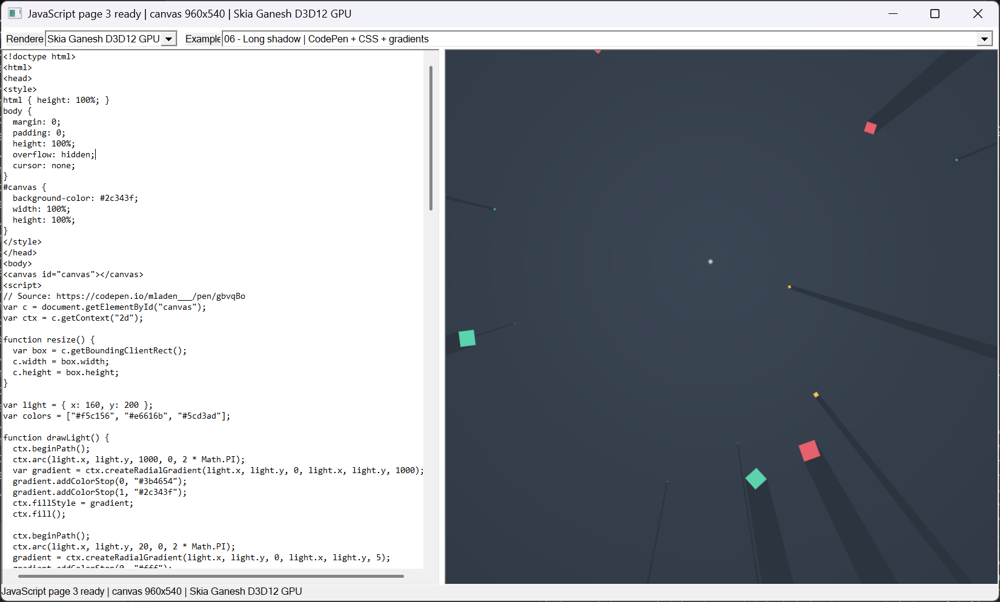

Last valid frame stays visible
A syntax or runtime error does not replace the running page. Valid edits take effect immediately.
C++20 · QuickJS-ng · Skia Ganesh · Direct3D 12
A compact HTML Canvas 2D runtime for Windows. It executes JavaScript, records Canvas operations, and routes each frame through switchable native renderer plugins.
Live browser playground
This preview runs standard Canvas 2D inside your browser. The native desktop application executes the same style of page through QuickJS-ng and its renderer plugins.
Actual Windows application
The application hosts an editable HTML/JavaScript page on the left and a GPU-backed Canvas surface on the right. Renderer plugins can be switched while the program runs.

Rendering pipeline
The executable owns the editor, JavaScript runtime, and frame loop. Rendering code stays behind a versioned C ABI and is discovered from DLLs at startup.
Engineering notes
A syntax or runtime error does not replace the running page. Valid edits take effect immediately.
Ganesh and the compositor share the D3D12 device, queue, adapter, and texture.
The host discovers renderer plugins at startup and can reload or switch them while running.
The direct backend exposes instance uploads, pipeline state, barriers, fences, and presentation.
Build it locally
The vcpkg manifest pins the tested dependency baseline and enables Skia's Direct3D feature. A hardware D3D12 adapter is required; the renderer does not silently fall back to WARP.
Full build notes$ $env:VCPKG_ROOT = 'C:\path\to\vcpkg'
$ cmake --preset default
$ cmake --build --preset release -- /mDeliberate boundary
This is a Canvas runtime and rendering demo, not a complete browser. It does not implement general DOM layout, full CSS, networking, modules, workers, image loading, text rendering, WebGL, or the web security model.